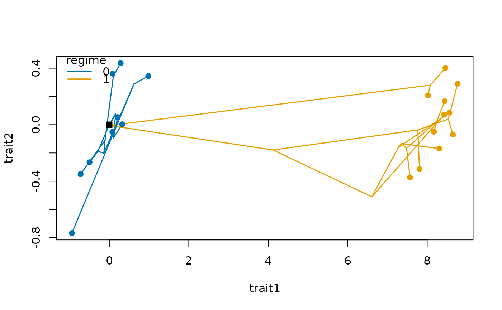

Traits evolving by an Ornstein-Uhlenbeck process with one or several optima
Source:R/trait_ou.R
trait_ou.RdSimulates traits along a tree under the Ornstein-Uhlenbeck (OU) model of
Hansen (1997), with the multi-optimum ("multi-peak") extension of Butler &
King (2004). Along each branch the trait is pulled towards the optimum
theta of the selective regime of that branch with strength alpha, while
drifting with rate sigma2. Values are drawn exactly from the transition
distribution of the process: over a branch of length \(t\), a trait with value
\(x\) at the start has, at the end, a normal distribution with mean
\(\theta + (x - \theta) e^{-\alpha t}\) and variance
\(\frac{\sigma^2}{2 \alpha} (1 - e^{-2 \alpha t})\), with \(\sigma^2\) = sigma2, \(\alpha\) = alpha and
\(\theta\) = theta.
Arguments
- tree
A rooted
phylotree with branch lengths.- n_traits
Number of traits. Taken from the rate matrices when
sigma2gives them, or else from the columns ofthetawhen it is a matrix.- alpha
Strength of selection towards the optimum (0 = Brownian motion).
- sigma2
Rate of the stochastic (drift) component: one number for all traits, which then evolve independently; a symmetric positive semidefinite rate matrix with one row and column per trait, for correlated traits; or a named list or vector with a matrix or a number per regime (names as in
regimes). Seerate_matrix(). Regimes in the list but not in the tree are ignored.- theta
Optimum of each regime: one unnamed value for a single optimum, or a named vector with one value per regime (names as in
regimes). For optima that differ between traits, a matrix with one column per trait and one row per regime, with the regimes as row names (one unnamed row for a single optimum).- regimes
Selective regime of each branch, in the order of the edges of
treereordered "cladewise" (ape::reorder.phylo(tree, "cladewise")), as returned bypaint_regimes(); or a tree with the same edges astreeand a mapped history (classsimmap, fromtrait_mk()orphytools::make.simmap()), whose states are the regimes, in any order of edges. The mapped tree can also be passed astreeitself.NULLputs every branch in one regime.- root
Trait value at the root: one number for all traits, or one per trait.
Value
Matrix with one row per tip (tip labels as row names) and one
column per trait, named as the columns of the rate matrix, if any. The attribute nodes holds the values at the internal nodes, one row
per node named by its number in tree$edge, the root first.
Details
With alpha = 0 the process is Brownian motion with rate sigma2, and the
optima play no role. With regimes given as a vector, each branch belongs to a single
regime, so a shift in optimum happens at the start of the branch where the regime changes.
With regimes given as a mapped history (class simmap, from trait_mk() or phytools),
regimes can also change within branches, at the times of the map.
Several traits evolve independently with sigma2 as one number, or correlated with an
evolutionary rate matrix, whose diagonal holds the rate of each trait
and whose off-diagonal elements hold the evolutionary covariances. A named list of matrices
gives each regime its own matrix, as in the multi-rate models of mvMORPH (Clavel et al.
2015); rate_matrix() builds them with the structures that mvMORPH fits. The strength of
selection alpha is the same for all traits; the optimum theta can differ between traits
(a matrix with one column per trait), so that regimes shift each trait by a different
amount. Under Brownian motion
(alpha = 0) the traits of the tips have covariance \(\sum_k R_k \otimes C_k\), where \(R_k\) is the rate matrix of regime \(k\) and \(C_k\) the
phylogenetic covariance matrix built from the time spent in regime \(k\) (Clavel et al.
2015).
References
Butler, M. A., & King, A. A. (2004). Phylogenetic comparative analysis: a modeling approach for adaptive evolution. The American Naturalist, 164, 683–695. doi:10.1086/426002
Clavel, J., Escarguel, G., & Merceron, G. (2015). mvMORPH: an R package for fitting multivariate evolutionary models to morphometric data. Methods in Ecology and Evolution, 6, 1311–1319. doi:10.1111/2041-210X.12420
Hansen, T. F. (1997). Stabilizing selection and the comparative analysis of adaptation. Evolution, 51, 1341–1351. doi:10.1111/j.1558-5646.1997.tb01457.x
See also
paint_regimes() to assign regimes to clades, rate_matrix() for rate matrices,
trait_mk() for a history of regimes that change within branches.
Other species traits:
arrival_ages(),
as_herodotools(),
food_web_rates(),
history_rates(),
paint_regimes(),
partner_turnover(),
plot.rate_matrix(),
plot_rates(),
plot_traits(),
rate_matrix(),
region_pool(),
species_traits(),
tip_history_metrics(),
trait_bm(),
trait_mk(),
trait_rates(),
turnover_rates()
Examples
set.seed(1)
tr <- treeshapesim::sim_tree_shape(20)
# Brownian motion
trait_ou(tr, alpha = 0)[1:3, ]
#> t1 t2 t3
#> -0.6621385 -0.5839205 -0.7438592
# two optima: the clade of node 25 evolves towards 10, the rest towards 0
reg <- paint_regimes(tr, nodes = 25)
x <- trait_ou(tr, alpha = 2, theta = c(`0` = 0, `1` = 10), regimes = reg)
round(x[, 1], 1)
#> t1 t2 t3 t4 t5 t6 t7 t8 t9 t10 t11 t12 t13 t14 t15 t16
#> 0.0 0.2 0.2 7.4 8.0 8.0 8.4 7.9 8.3 8.6 8.8 8.2 8.5 8.5 0.7 0.0
#> t17 t18 t19 t20
#> 0.0 -0.3 -0.7 0.9
# two correlated traits
r <- rate_matrix(c(1, 0.5), correlation = 0.8)
y <- trait_ou(tr, sigma2 = r)
cor(y)
#> trait1 trait2
#> trait1 1.000000 0.943929
#> trait2 0.943929 1.000000
# the shift to regime 1 moves the optimum of trait 1 but not of trait 2
th <- rbind(`0` = c(0, 0), `1` = c(10, 0))
z <- trait_ou(tr, alpha = 2, sigma2 = r, theta = th, regimes = reg)
plot_traits(z, tr, regimes = reg)
